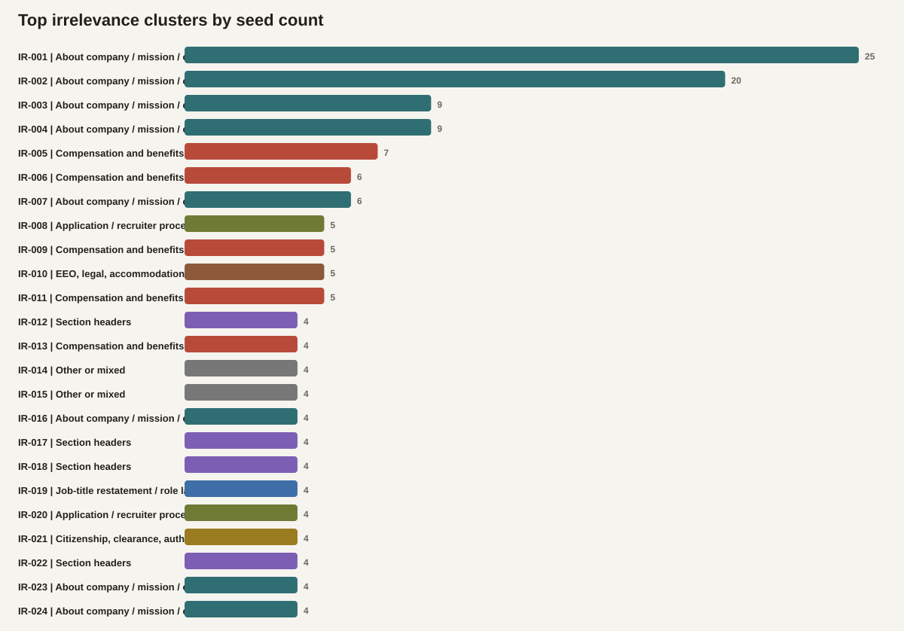
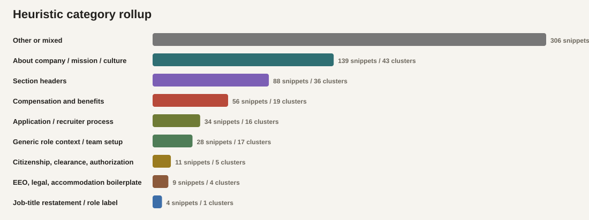
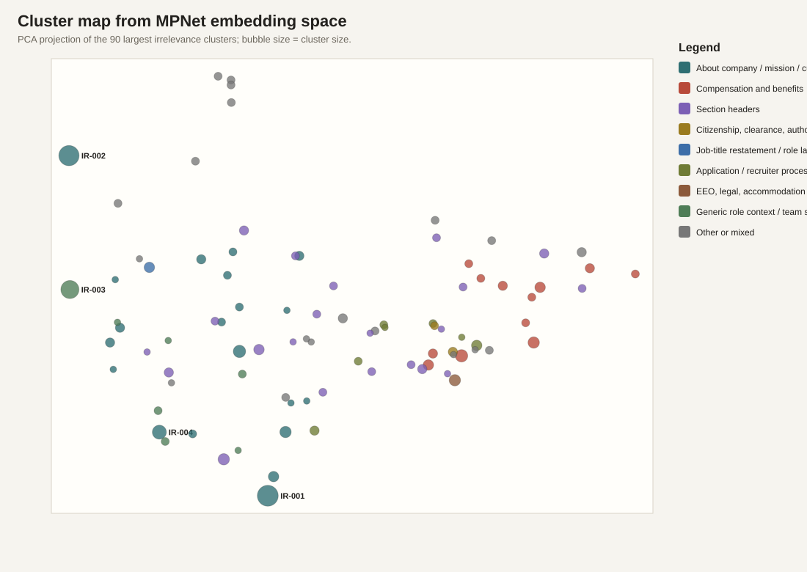

Generated 2026-05-10T15:27:59.479057+00:00. Based on 675 not-relevant seeds and 1105 reviewed-relevant seeds.



| Category | Snippets | Clusters |
|---|---|---|
| Other or mixed | 306 | 261 |
| About company / mission / culture | 139 | 43 |
| Section headers | 88 | 36 |
| Compensation and benefits | 56 | 19 |
| Application / recruiter process | 34 | 16 |
| Generic role context / team setup | 28 | 17 |
| Citizenship, clearance, authorization | 11 | 5 |
| EEO, legal, accommodation boilerplate | 9 | 4 |
| Job-title restatement / role label | 4 | 1 |
| Cluster | Size | Heuristic label | Top terms |
|---|---|---|---|
| IR-001 | 25 | About company / mission / culture | culture, creating, environment, employees, diversity, inclusion, committed, where |
| IR-002 | 20 | About company / mission / culture | frontier, models, science, capabilities, scientific, biological, building, scale |
| IR-003 | 9 | About company / mission / culture | systems, through, real, safety, world, must, challenges, impact |
| IR-004 | 9 | About company / mission / culture | product, you'll, help, people, design, future, ceo, take |
| IR-005 | 7 | Compensation and benefits | compensation, based, vary, range, level, hired, candidate, ranges |
| IR-006 | 6 | Compensation and benefits | dental, vision, insurance, plan, competitive, medical, life, disability |
| IR-007 | 6 | About company / mission / culture | development, opportunities, leadership, growth, learning, career, advancement, training |
| IR-008 | 5 | Application / recruiter process | relocation, support, employees, who, need, assistance, moving, domestic |
| IR-009 | 5 | Compensation and benefits | life, insurance, employee, optional, paid, company-paid, coverage, supplemental |
| IR-010 | 5 | EEO, legal, accommodation boilerplate | status, gender, protected, legally, any, employment, race, religion |
| IR-011 | 5 | Compensation and benefits | health, family, focus, robust, wellbeing, programs, wellness, medical |
| IR-012 | 4 | Section headers | believe, innovation, diverse, ideas, foster, engagement, allow, attract |
| IR-013 | 4 | Compensation and benefits | future, provides, generous, employer, match, employee, contributions, support |
| IR-014 | 4 | Other or mixed | centerline, logistics, services, marine, united, states, leading, provider |
| IR-015 | 4 | Other or mixed | weeks, paid, parental, leave, fully, parents, available, birth |
| IR-016 | 4 | About company / mission / culture | carbon, soil, grassroots, leading, grasslands, implement, land, practices |
| IR-017 | 4 | Section headers | looking, what, we're |
| IR-018 | 4 | Section headers | flexible, spending, health, accounts, care, savings, account, option |
| IR-019 | 4 | Job-title restatement / role label | engineer, senior, founding, junior, infrastructure, factory, model, fine-tuning |
| IR-020 | 4 | Application / recruiter process | apply, encourage, every, about, but, individuals, you're, passionate |
25 snippets. Top terms: culture, creating, environment, employees, diversity, inclusion, committed, where
20 snippets. Top terms: frontier, models, science, capabilities, scientific, biological, building, scale
9 snippets. Top terms: systems, through, real, safety, world, must, challenges, impact